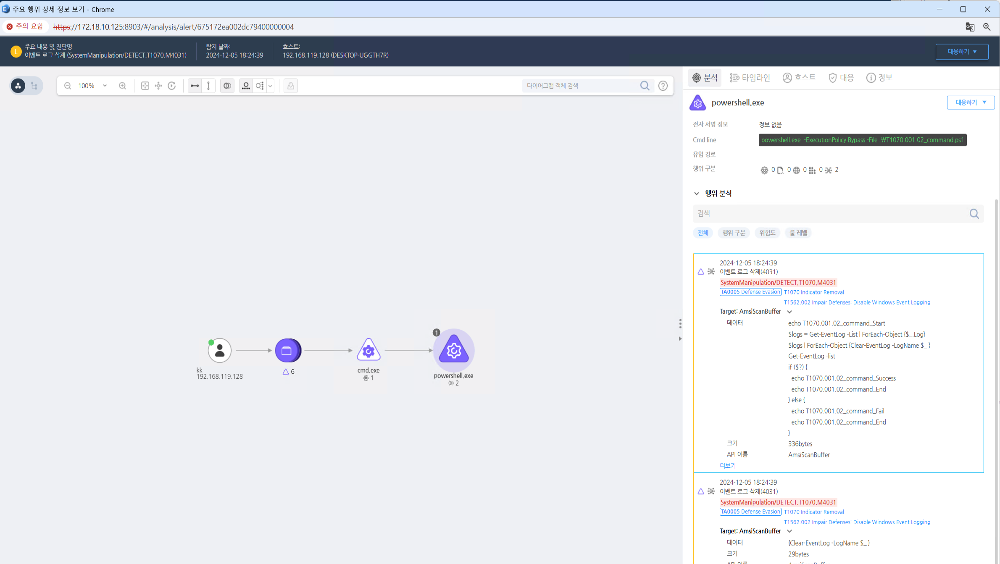

T1070.001.02 Windows 이벤트 로그 삭제
D3FEND
MITRE ATT&CK 액션을 기준으로 대응 방안을 작성
Detection
AMSI Scan Buffer: eventlog-clear
Detection(EDR)

Response
명령어 기록 삭제를 방지하는 예방적 조치와 로그 및 시스템 모니터링을 통해 공격자의 활동을 추적하고, 침해 사실을 은폐하려는 시도를 방지하는 데 초점을 둡니다. 파일 무결성 모니터링, 시스템 로그 모니터링, 정기적인 백업, 디지털 포렌식 분석, 침해 탐지 시스템을 강화하여 공격자가 명령어 기록을 삭제하려는 시도를 어렵게 만듭니다.
Mitigations
명령어 기록 보호
- 읽기 전용 파일 권한 설정:
- 쉘 기록 파일(~/.bashhistory, ~/.zshhistory 등)에 대한 읽기 전용 권한을 설정하여 사용자가 이를 수정하거나 삭제할 수 없도록 합니다.
- 예를 들어, chmod 444 ~/.bash_history 명령어로 파일을 읽기 전용으로 설정할 수 있습니다.
- 파일 접근 제어:
- 명령어 기록 파일의 권한을 제한하여 악성 사용자가 이를 삭제하거나 수정할 수 없도록 합니다.
- 기록 파일에 대한 강력한 파일 권한을 설정하고, 불필요한 접근을 차단합니다.
명령어 기록 비활성화 또는 최소화
- HISTCONTROL 설정:
- HISTCONTROL 환경 변수를 설정하여 불필요한 명령어가 기록되지 않도록 할 수 있습니다.
- 예를 들어, HISTCONTROL=ignoredups로 중복된 명령어는 기록하지 않거나, HISTCONTROL=ignorespace로 공백으로 시작하는 명령어는 기록하지 않게 설정할 수 있습니다.
- HISTSIZE 및 HISTFILESIZE 설정:
- HISTSIZE와 HISTFILESIZE 값을 0으로 설정하여 명령어 기록을 저장하지 않도록 할 수 있습니다.
- 예: HISTSIZE=0, HISTFILESIZE=0.
- 로그 기록 강화:
- ~/.bashrc나 /etc/profile 파일에서 명령어 기록을 비활성화하는 설정을 추가하여 기록이 남지 않도록 할 수 있습니다.
명령어 기록 외부 저장
- 중앙화된 로그 시스템:
- 명령어 기록을 로컬 시스템이 아닌 중앙화된 로그 서버나 보안 시스템으로 전송하여, 로컬에서 기록을 삭제하거나 수정해도 중앙 시스템에서 기록을 추적할 수 있도록 합니다.
- auditd와 같은 로그 시스템 활용:
- auditd와 같은 감사 시스템을 사용하여 모든 명령어 실행을 중앙에서 기록하고, 이를 주기적으로 분석합니다.
- 이 방식은 로컬에서의 명령어 기록 삭제를 방지할 수 있습니다.
파일 무결성 모니터링(FIM) 사용
- 파일 무결성 모니터링을 통해 ~/.bash_history와 같은 명령어 기록 파일의 변조를 실시간으로 감지합니다. 이를 통해 공격자가 기록 파일을 수정하거나 삭제하려고 시도하는 것을 추적할 수 있습니다.
- 중앙 모니터링 시스템(SIEM)을 통해 파일의 무결성을 모니터링하고, 변경이 발생할 때 즉시 알림을 받을 수 있도록 합니다.
시스템 로그 및 실행 기록 강화
- 로그 파일 강화:
- 시스템 로그에 명령어 실행과 관련된 기록을 강화합니다.
- /var/log/auth.log, /var/log/secure, /var/log/messages 등을 활용하여 명령어 실행 기록을 저장하고 분석합니다.
- 고급 로그 수집 및 분석:
- Sysmon(Windows)이나 Auditd(Linux)와 같은 고급 로그 수집 도구를 사용하여 시스템에서 실행된 명령어를 기록하고, 삭제된 기록에 대한 로그를 추적합니다.
디스크 암호화 및 복원
- 디스크 암호화:
- 중요한 기록 파일들이 포함된 시스템의 디스크를 암호화하여, 공격자가 물리적으로 디스크에 접근하거나 삭제하는 것을 어렵게 만듭니다.
- 시스템 이미지 백업:
- 명령어 기록 파일이 삭제된 경우, 시스템 이미지 백업을 통해 원본 상태로 복구할 수 있습니다.
- 이를 통해 기록 삭제를 사후적으로 복구할 수 있습니다.
명령어 실행 감시 및 경고 시스템 설정
- 실시간 알림 시스템:
- 명령어 기록 파일이 삭제되거나 변경될 때, 실시간으로 경고 알림을 받을 수 있도록 설정합니다.
- 예를 들어, 변경 사항을 모니터링하는 파일 무결성 도구나 SIEM 시스템을 설정할 수 있습니다.
- 비정상적인 활동 탐지:
- 명령어 기록 삭제와 관련된 비정상적인 활동을 탐지하기 위해 시스템에서 일어나는 활동을 면밀히 분석합니다.
Affected Techniques
Action 실행시 함께 영향을 받는 다른 Techniqes
| D3FEND |
| D3-FE File Eviction |
| D3-PLA Process Lineage Analysis |